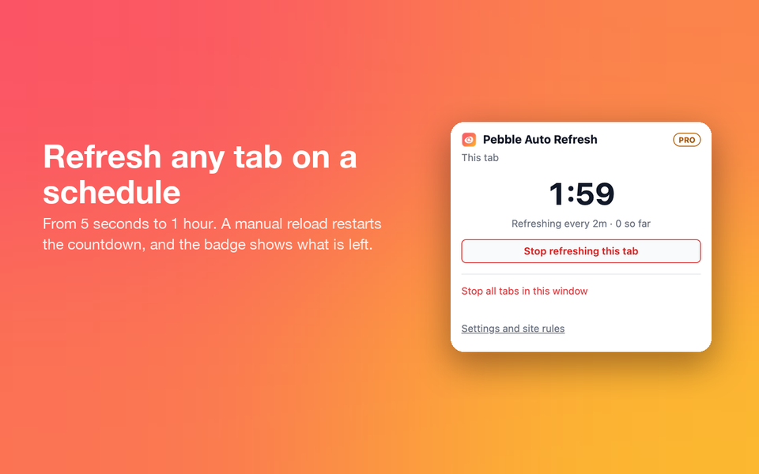
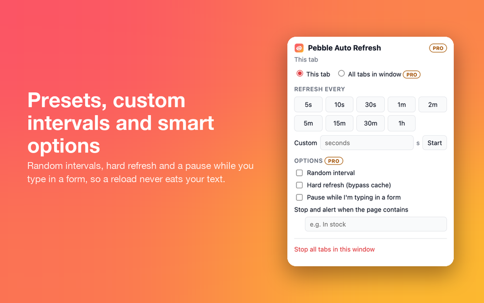
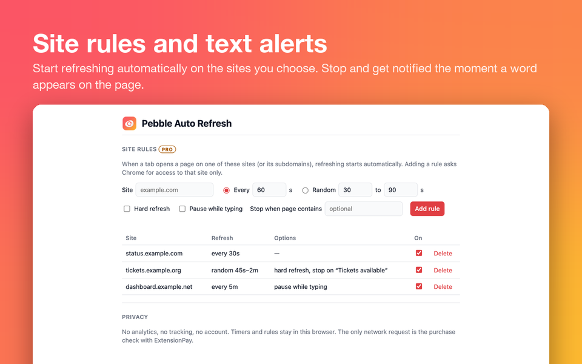
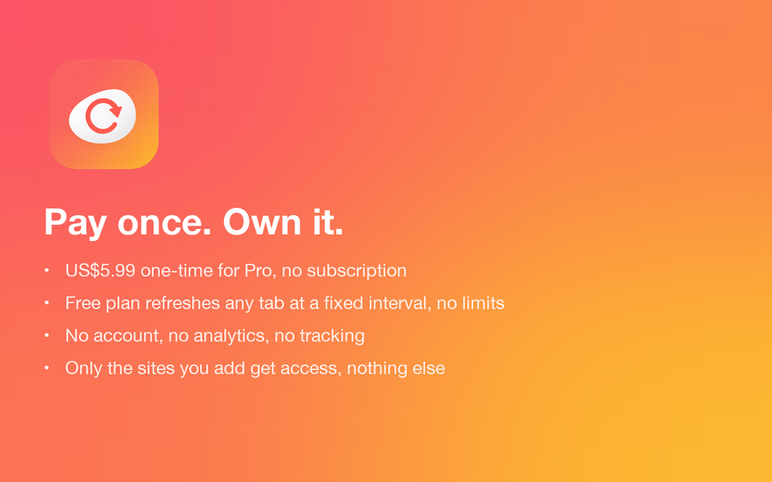

How it works
Pick an interval
Open the popup on any tab and choose 5, 10 or 30 seconds, 1, 2, 5, 15 or 30 minutes, 1 hour, or type your own number of seconds. Run timers on as many tabs as you like, free, with no time limit.
Watch the countdown
The toolbar badge counts down on each tab, and the popup shows a big live countdown with a Stop button that always works. Reload the page yourself and the countdown starts over, so there is no surprise refresh three seconds later. Closing a tab stops its timer.
Let it watch for you
With Pro, a site rule starts refreshing as soon as a site you choose opens, and a text alert stops refreshing and notifies you when the page shows the words you are waiting for, such as "In stock", "Tickets available" or "Approved".
Screenshots




Free and Pro
| Free | Pro · US$5.99 once |
|---|---|
|
|
Questions
Is it safe? What data leaves my browser?
Nothing about you. Timers, site rules and settings stay in Chrome's storage, and there is no account, no analytics and no record of which pages you refresh. The only network request is to extensionpay.com, to check whether Pro has been bought. Details are in the privacy policy.
Why does it need these permissions?
| Permission | Why |
|---|---|
alarms | Schedules each tab's next reload, so it still happens if Chrome puts the extension to sleep. |
storage | Saves active timers, your site rules and whether you bought Pro. |
activeTab | When you open the popup, reads the current tab's address to show which site is refreshing and to offer a rule for it. |
scripting | For the optional typing pause and text alert, runs a small read-only check on sites you have granted: is a form field focused, or does the page contain your word. |
site access | Never granted at install. Requested for one site when you add a site rule or turn on typing pause or a text alert there. Deleting the rule releases it. |
notifications | Optional, requested only when you set a text alert, to show a desktop notification when the text appears. |
extensionpay.com | Part of the payment library: on ExtensionPay's checkout page it tells the extension that a purchase completed. It runs on no other site. |
Does it keep refreshing background tabs, and after I reload by hand?
Yes. Timers keep running on tabs you are not looking at, and keep working when Chrome puts the extension to sleep. If you reload a page yourself, its countdown restarts from the full interval instead of firing a few seconds later.
What does the free version include?
Timers on as many tabs as you want with no time limit, every preset from 5 seconds to 1 hour plus custom intervals, the live countdown, and the manual-reload restart. It does not expire.
How is Pro paid, and who sells it?
Pro is a single payment of US$5.99, with no subscription and nothing to cancel. Checkout happens on ExtensionPay's and Stripe's pages; the extension never sees your card.
Pro is sold by Anda Tech Solutions SRL, the developer of Pebble Auto Refresh, not by Google. Payments are processed by ExtensionPay and Stripe. For support or refunds, contact contact@yallahop.com.
How do I restore Pro on another computer?
Install Pebble Auto Refresh there, open its settings and choose Restore purchase, then use the email address you paid with.
Can I get a refund?
Write to contact@yallahop.com with the email address you paid with. Refunds are handled by Anda Tech Solutions SRL, the developer.
Does it work on Microsoft Edge?
Yes. Edge and other Chromium-based browsers can install it from the Chrome Web Store; in Edge, allow extensions from other stores when it asks. A listing on Edge Add-ons is coming.
More from Pebble

Pebble Autofill
Fill any form in one click from profiles you control. Free with 2 profiles; Pro is US$12.99, once.